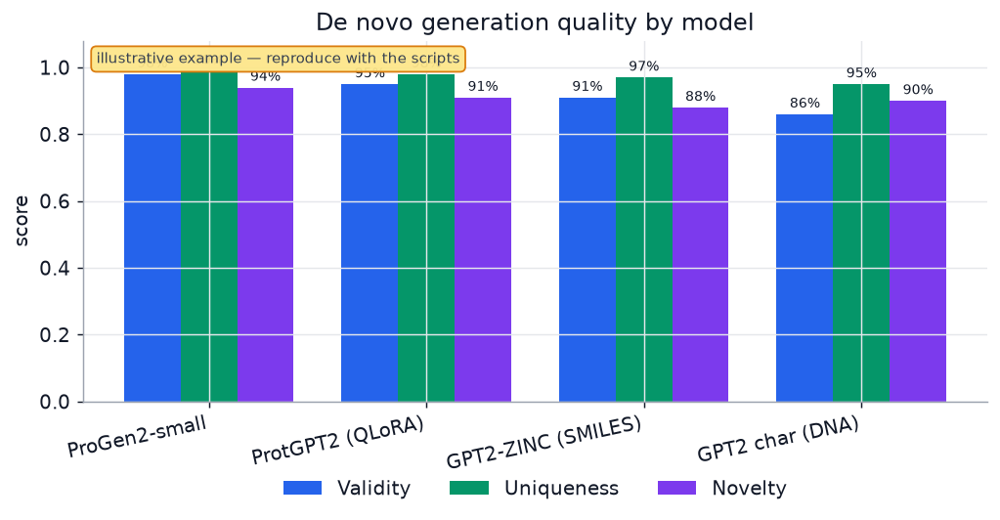
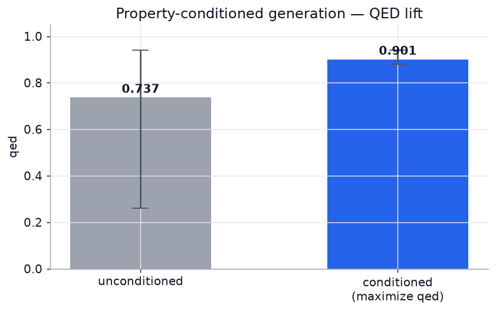
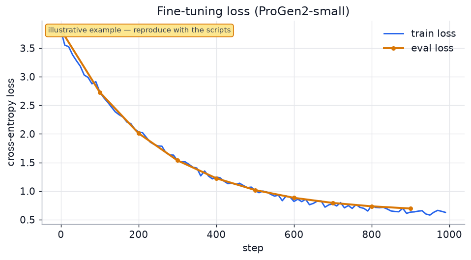
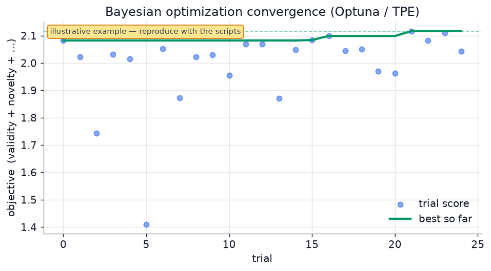
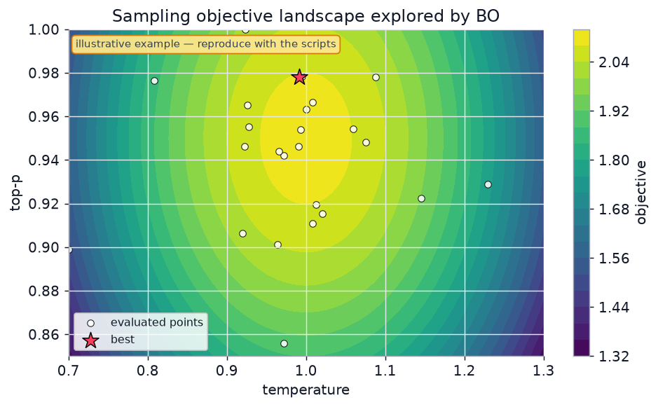
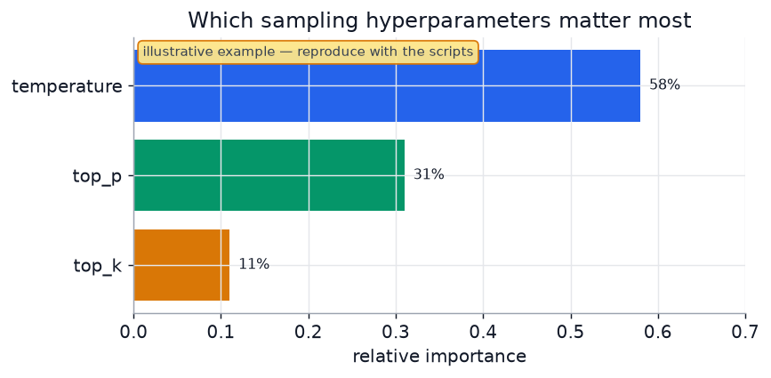

One modular, config-driven pipeline to fine-tune, generate, benchmark and Bayesian-optimize generative models for small molecules, proteins & peptides, and nucleic acids — engineered to run on a 6 GB laptop GPU.
A single modality registry drives everything — add a biomolecule type in a few lines and the entire train → generate → evaluate → optimize flow just works.
SMILES / SELFIES molecules, protein & peptide sequences, and DNA/RNA — one framework, one CLI.
Full fine-tune, LoRA, or 4-bit QLoRA on any Hugging Face causal LM. Defaults tuned for 6 GB VRAM.
Validity, uniqueness, novelty and diversity — the field-standard de novo benchmark, reported automatically.
Optuna (TPE) tunes sampling & training hyperparameters to maximize quality with a small trial budget.
One short YAML fully describes a run. Ready-made configs for ProGen2, GPT2-ZINC, ProtGPT2 and more.
Built and documented for an RTX 3000 (6 GB). Cross-platform commands for Windows, macOS & Linux.
Install, run the CPU smoke test to validate your setup, then fine-tune ProGen2 on your GPU.
# 1. Environment (Python 3.12) python3.12 -m venv .venv && source .venv/bin/activate # 2. PyTorch (CPU; for GPU use the cu128 index) + the package pip install torch pip install -e ".[chem]" # adds RDKit + SELFIES # 3. Offline smoke tests (no network / GPU needed) denovo-mol pipeline -c configs/mol_flow_smoke.yaml python scripts/make_tiny_local_model.py denovo pipeline -c configs/smoke_local.yaml # 4. Real fine-tune (downloads ProGen2 from Hugging Face) denovo train -c configs/progen2_protein.yaml denovo generate -c configs/progen2_protein.yaml -n 500 -o generated/prot.txt denovo evaluate -c configs/progen2_protein.yaml -i generated/prot.txt
# 1. Environment (Python 3.12) python3.12 -m venv .venv && source .venv/bin/activate # 2. PyTorch (Apple Silicon uses the MPS backend automatically) pip install torch pip install -e ".[chem]" # 3. Offline smoke tests denovo-mol pipeline -c configs/mol_flow_smoke.yaml python scripts/closed_loop_demo.py # 4. Real fine-tune (set train.fp16:false on Mac — use MPS defaults) denovo train -c configs/progen2_protein.yaml
# 1. Environment (Python 3.12, PowerShell) py -3.12 -m venv .venv; .\.venv\Scripts\Activate.ps1 # 2. PyTorch (CPU; GPU = cu128 index + Python 3.12) + the package pip install torch pip install -e ".[chem]" # 3. Offline smoke tests denovo-mol pipeline -c configs\mol_flow_smoke.yaml python scripts\make_tiny_local_model.py denovo pipeline -c configs\smoke_local.yaml # 4. Real fine-tune (downloads ProGen2 from Hugging Face) denovo train -c configs\progen2_protein.yaml
📖 Full platform-by-platform setup, GPU tips and troubleshooting live in
RUN.md.
On a 6 GB GPU, the recommended de novo model is ProGen2-small. The heavyweight foundation models (Evo 2, ESM-3) are best used via NVIDIA NIM / cloud.
| Model | Modality | Params | Regime | Fits 6 GB? |
|---|---|---|---|---|
| ProGen2-small ⭐ | Protein / peptide | 151M | Full fine-tune | Yes |
| ProtGPT2 | Protein | 738M | 4-bit QLoRA | Yes |
| GPT2-ZINC | Small molecules (SMILES) | 87M | Full fine-tune | Yes |
| ChemGPT-4.7M | Small molecules (SELFIES) | 4.7M | Full fine-tune | Yes |
| GPT2 char-level | DNA / RNA | 124M | Full / LoRA | Yes |
| BioMistral-7B | Biomedical text | 7B | 4-bit QLoRA | Tight |
| ESM-3 / Evo 2 | Protein / DNA | 1.4B–40B | Cloud / NVIDIA NIM | No |
Full feasibility analysis and NVIDIA NIM notes:
docs/MODELS.md.
Every generation run is scored on the four standard de novo metrics. The figures below
are produced by scripts/benchmark.py and scripts/make_figures.py.
Measured results (GPT2-ZINC 87M, RDKit): de novo — 100% validity / 100% uniqueness / 100% novelty / 0.85 diversity on 1,000 molecules; property conditioning — mean QED 0.74 → 0.90; scaffold constraint — benzene containment steered from 57% to 100%; NVIDIA NIM (MolMIM) — aspirin (QED ≈ 0.55) optimized to QED 0.91 in the cloud. The loss and Bayesian-optimization charts remain illustrative until those runs.



Sampling and training hyperparameters are tuned with Optuna's TPE sampler — a Bayesian method that finds strong settings in far fewer trials than grid or random search.
# Optimize decoding hyperparameters against validity + novelty + diversity denovo optimize -c configs/progen2_protein.yaml \ --mode sampling -m outputs/progen2_small --trials 25 \ -o docs/results/bo_study.json # Render the graphs below from the study python scripts/make_figures.py --study docs/results/bo_study.json



If this project supports your research, please cite it.
@software{sanjay_denovo,
author = {Dr. Sanjay Anbu},
title = {De-Novo-LLM: Fine-tuning language models for de novo biomolecule generation},
year = {2026},
url = {https://github.com/sanjaydoc/De-Novo-LLM}
}